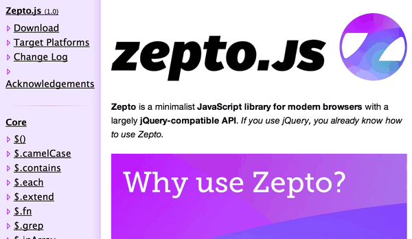
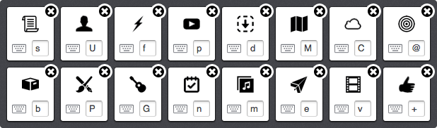

Preface: Nothing in this post is necessarily new, or even anything I thought of first (save for a name or two). However,
I’m writing it because I’d like to start building some consistency and naming conventions around a few of the techniques
that I am using (and are becoming more common), as well as document some processes that I find helpful.
Much of this comes from my experience deploying applications at Bazaarvoice as a large third party vendor, and should
probably be tailored to your specific environment. I’m sure someone does the opposite of me in each step
of this with good results.
Also, I fully understand the irony of loading a few MBs of GIFs in a post largely about performance,
but I like them. Any specific tools I mention are because I’m familiar with them, not necessarily because there
are no good alternatives. Feel free to comment on other good techniques and tools below. Facts appreciated.
You
You work on a large app. You might be a third party, or you might not be. You might be on a team, or you might not be.
You want maximum performance, with a high cache rate and extremely high availability.
The hope is that you have a way of taking your dev environment files and wrapping them up into concisely built and minified JavaScript
and CSS files. Ideally this is an easy step for you, otherwise, you’ll tend to skip it.
Optimize for ease of mind here. I tend to disagree with the sentiment that ‘script tags are enough.’ Try to manage your dependencies
in a single place, and that place probably isn’t in the order of your script tags in your HTML. Avoiding this step is easy until it isn’t.
Loading what you need is better than byte shaving
One technique at the build-stage that is ideal for performance, is building minimal packages based on likely use. At page load, you’ll want
to load, parse, and execute as little JavaScript as possible. Require.js allows you to “exclude” modules from your builds and
create separate secondary modules. Rather than shaving bytes
in your app files, you can avoid loading entire sections of code. Most sections of an app have predictable entry points that you can listen for
before injecting more functionality.
In our current app, only a fraction of the users click on the button that causes a specific flow to popup. Because of this we can
save ~20kb of code at page load time, and instead load it as a mouse gets close to the button, or after a few seconds of inactivity (to prime the cache).
This technique will go a much longer way than any of your normal byte saving tricks, but is not always the easiest and for that reason is often avoided.
Check your network panel the next time you have Gmail open to see how
Google feels about this technique. They take an extra
step and bring the code in as text, and don’t bother parsing or executing it until they need to. This is good for low-powered/mobile devices.
In fact, some Googlers released a library, Module Server, that allows you to do some of this dynamically.
It works with lots of module formats. And technically you could just use it to see how it decides to break up your files, and then switch
over to fully static files after you get that insight. They presented on it at JSConf.eu 2012:
So instead of using a microjs cross-domain communication library that your coworker hacked together, just delay loading EasyXDM
until you need to do cross domain form POSTs.
Don’t penalize modern users
I’m all for progressive enhancement, and have to support IE6 in our primary application. However, it pains me when modern browser users have to pay
a performance price for the sins of others. It’s a good idea to try to support some level of “conditional builds” or “profile builds.” In the
AMD world, you can use the has.js integration, or if you’re feeling especially dirty, a build pragma.
However, third-parties have written some pretty nifty tools for doing this as a plugin.
One of the best tools for this that I’ve seen is AMD-feature. It allows you
to use a set of known supported features to load the best fitting build for the current user. This can be great on mobile. You can silently switch
out jQuery with Zepto (assuming you stick to the shared subset). You can add and remove polyfills for the correct users. If 20% of your JavaScript
is loading for %3 of your users, something is backwards.
define({'dropdown':[{isAvailable:function(){// test if we are on iOSreturniOS?true:false;},implementation:'src/dropdown-ios'},{isAvailable:function(){// if we end up here, we're not on iOS,// so we can just return true.returntrue;},// Naturally this is simiplified and doesn't actually// imply Androidimplementation:'src/dropdown-android'}]});// In your code, you would load your feature like this:define(['feature!dropdown'],function(dropdown){// The variable 'dropdown' now contains// the right implementation - no matter// what platform the code is executed on,// and you can just do this:varmyDropdown=newdropdown();});
One less jpeg
Lots of people like repeating this one. I think Paul Irish coined itAdam J Sontag naturally coined it, but the idea is if that if you loaded one less jpeg on your
site, you could fit in quite a bit of unshaved JavaScript in its place. Consider this the next time you are sacrificing readability or compatibility for file size.

Requests matter
File size aside, the balance of a fast JS deployment lies somewhere between the number of requests, and the cachability of those requests.
It’s often alright to sacrifice the cachability of a small script if you can inline it without causing an additional request. The exact balance
is not one that I could possibly nail down, but you can probably think of a file that is dynamic enough and small enough in your application
that might make sense to just print it inline in your page.
Package all the pieces together
Fonts and Icons
These days, these two are synonymous. I really like using fonts as icons and have done so with great success. We try to find appropriate unicode
characters to map to the icons, but it can sometimes be a stretch. Drew Wilson’s Pictos Server is an incredible way
to get going with this technique, though I might suggest buying a font pack in the end for maximum performance (so you can package it with your
application).

First, we inline fonts as data URIs for supporting browsers. Then we fallback to referencing separate files (at the cost of a request), and then we fallback
to images (as separate requests). This means we end up with different builds of our CSS files. Each CSS build only includes one of the techniques,
so no one user is penalized by the way another browser might need fonts. The Filament Group has a tool for this called
Grunticon. I’d highly recommend this technique. For every modern browser, you have a single
request for all styles and icons, with no additional weight from old IEs that don’t support data-URIs.
CSS Files
It’s typically the case that updates to JavaScript files necessitate changes to CSS as well. So these files usually have the same update times. For that
reason it’s pretty safe to package them together.
So, as part of our build step, we first build our necessary CSS for our package into a file (for Bazaarvoice: styles are dependencies of templates,
which are dependencies of views, which are dependencies of the separate module packages we’re loading, so this is an automatic step). Then we
read this file in, minify it, and inject it as a string in our main JavaScript file. Because we have control over when the templates are
rendered, we can just inject the CSS into a style tag before rendering the template. We have to render on the serverside occasionally, as well,
and in these cases I would recommend against this technique to avoid a flash of unstyled content.
varcss='#generated{css:goes-here;}';varhead=document.head||document.getElementsByTagName('head')[0],varstyle=document.createElement('style');style.type='text/css';if(style.styleSheet){style.styleSheet.cssText=css;}else{style.appendChild(document.createTextNode(css));}// Only assume you have a <head> if you control// the outer page.head.appendChild(style);
Since we inline the fonts and icons into our CSS files, and then inline the CSS into our JS file (of which only 1 is injected on load), we end up with
a single packaged app that contains fonts, icons, styles, and application logic. The only other request will be necessary media and the data (we’ll
get to those).
You may notice that we now have a couple of combinations of packages. Yep. If we have 3 ways to load fonts/icons multiplied by the number of
build profiles that we chose to create (mobile, oldIE, touch, etc), we can get 10-20 combinations fast. I consider this a really good thing. When you
generate them, have some consistent way of naming them, and we’ll be able to choose our exact needed app for a user, rather than a lot of extra
weight for other users.
Quick Note: Old IEs can be fickle with inlining a lot of CSS. Just test your stuff and if it breaks, just fall back to link tag injection for oldIEs.
The Scout File
This post actually started out as a means to solidify this term. Turns out I am a bit more long-winded than I anticipated.
The Scout File or Scout Script is the portion of JavaScript that decides which package needs to be loaded. It kicks off every process that can happen in parallel, has a low cache time, and is as small as possible.
It gets its name from being a small entity that looks out of the cache from time to time to warn everybody else that things have
changed. It’s ‘scouting’ for an app update and gathering data.
// Simplified example of a scout file(function(){// Feature test some stuffvarfeatures={svg:Modernizr.svg,touch:Modernizr.touch};// The async script injection fanfarevarscript=document.createElement('script');varfScript=document.getElementsByTagName('script')[0];varbaseUrl='//cool-cdn.com/bucket/'+__BUILDNUM__+'/';// Build up a file url based on the features of this uservarfeatureString='';for(variinfeatures){if(features.hasOwnProperty(i)&&features[i]){featuresString+='-'+i;}}varpackage='build'+featureString+'.js'// Set the URL on the scriptscript.src=baseUrl+package;// Inject the scriptfScript.parentNode.insertBefore(script,fScript);// Start loading the data that you know you can grab right away// JSONP is small and easy to kick off for this.vardataScript=document.createElement('script');// Create a JSONP Url based on some info we have.// We'll assume localstorage for this example// though a cookie or url param might be safer.window.appInitData=function(initialData){// Get it to the core application when it eventually// loads or if it's already there.// A global is used here for ease of examplewindow.comeGetMe=initialData;};// If we're on a static site, the url might tell us// the data we need, and the user cookie might customize// it. Simplified.dataScript.src='//api.mysite.com'+document.location.pathname+'?userid='+localStorage.getItem('userid')+'&callback=appInitData;';// Inject itfScript.parentNode.insertBefore(dataScript,fScript);})();
If you’re a third party or have little control over the pages you’re injected on, you’ll probably use a file. Otherwise, the code
should be small enough and dynamic enough to warrant inlining on a page.
Build apps into self-contained folders
When you build your application, you end up with a set of static files in a folder. Take this folder of files and assign a build number to it.
Then upload this to a distributed content delivery network. S3 with CloudFront
on top of it is an easy choice. The Grunt S3 Plugin is a good way to do this with the Grunt toolchain.
Bazaarvoice has an Akamai contract, so we tend to use them, but the idea is that you are getting your built files onto servers that are geographically
close to your users. It’s easy and cheap. Don’t skimp! Latency is king.
Now that you have an app on a static CDN, make sure it gets served gzipped (where appropriate, grunt-s3 can help with this), and then set the cache
headers on your built files to forever. Any changes will get pushed as a different set of built files in a totally different folder, these
files should be guaranteed to never change. The only exception to this rule is the Scout File, which lives outside of the build folders in the root
directory.
The scout file for our third-party app is a very small JS file that contains a build number and a bit of JavaScript to determine the build profile
that needs to be loaded. It also contains the minimum amount of code to determine the initial data that we’re going to need for a page. It doesn’t
have jQuery, or really any dependencies, it just does exactly what it needs to do. This file is cached for about 5 minutes (should be relatively short, but
close to the average session length).
Parallelizing the initial data request
Many people use each of their models to make separate requests for data once the app is loaded. Unfortunately, this is terrible for performance. Not only
are there multiple requests, but they can’t be fired off until the BIG app files are loaded and executed. We want to parallelize the loading of our app
and our data. This is going to be tough for some folks, but it’s a huuuge performance win.
We use node.js to run our models at build time. We feed in each of the “page types” that we know how to handle. For each of these page types, each model registers
its intent to load data, and we build up a hash of data that is needed for each page type and stick that into the scout file.
Then we had our API folk create a batch API so we can make multiple data requests at once. We use this hash of needed data for each page type (we have less than
10 page types, and you probably do too) in order to fire off a single request for the data that all the models will need, before they are loaded. Unfortunately
the way to do this changes drastically based on your framework, but it’s worth your time!
Statically generate your container pages and CDN them too
If you aren’t rendering templates on the server, then there’s likely no reason you shouldn’t be statically compiling all of your page shells at their
appropriate urls, and uploading them to a static CDN along with your scripts. This is a huge performance improvement.
Distributing the HTML to geographically close servers can have big wins towards getting to your actual content more quickly. In the case that you are uploading your static HTML
pages up to the static cdn along with your JS Application, your HTML files can become your Scout File. Put a small cache on each static HTML
page and inline the contents that you would have put in a scout file. This serves the same purpose as before, except we’ve saved a request. The only thing
that isn’t highly cached on a close-by server is the data, and we’re already loading that in parallel with our app if we’ve followed the previous instructions.
This means the main URL for your site is just a CNAME to a Cloudfront url. Doesn’t that just sound nice? Talk about good uptime! Of course that
means the dynamic parts of your site would come from a subdomain like api.mysite.com or similar. The reduced latency of your initial HTML can be
a very nice win for performance since you’ve inlined a scout file to immediately load the rest of the app in parallel.
The smart peeps at Nodejitsu put out Blacksmith to help with static site generation a while
back, but there are plenty of options. Many apps are single page apps with
only an index.html file anyways, so you can skip the static generation all together.
All this together
The goal in all of this is to:
geographically cache anything that’s static, not just images and jQuery.
cache your app until it changes, but not much longer.
The folder structure I normally see is something like:
The index.html file is the only thing that changes, everything else is just added. If we’re a third party, it’d be the scout.js file since we’d be included in someone
else’s markup. Everything else has a 30yr cache header. We can upload our build into a folder, verify it, and then switch the build number in the scout file.
// Simplification of the above processvarbuild='__BUILD__';// Replaced at build timeinjectApp('/app/'+build+'/build.js');
Deploying a new version of the app becomes “updating one variable.” This means that every user on the site will have a fully updated app in the amount
of time you cached your scout file for. In our case it’s 5 minutes. It’s a pretty good trade off for us. We get lifetime caching for our big files and media,
but have a very quick turn around time for critical fixes and consistent roll-outs. It also means that if we ever need to roll back, it’s a single variable
change to get people fully back on the old code. Clean up old builds as you feel is necessary.
Other media requests
Naturally, you’ll have some logo images, or some promo images to load as part of the app. These should probably just be imageOptim’d,
and sprited as best as possible. However, there is usually a second class of media on a site. Usually these are thumbnails and previews and avatars and such.
For these files, I’d suggest using a mechanism to lazy load these media files. Make sure you’re doing smart things with scroll event handlers (hint: throttling
the hell out of them), but you don’t want to load 50 avatars if the user is 1000px away from that part of your app. Just be smart about this stuff. It’s not
really my intent to cover this portion of app performance since it’s not entirely related to deployment.
Wrap Up
There’s nothing that surprising about these techniques. Everything that could possibly be statically generated is statically generated,
and thrown out on edge-cached servers. Every piece of functionality that isn’t needed on page load, isn’t loaded on page load. Everything that is needed
is loaded in parallel right away. Everything is cached forever, save for the scout file and the data request (you can save recent requests in local storage though!).
You aren’t left with much else to optimize. You are always only loading and executing the minimum amount of JavaScript, and saving it for the maximum amount
of time. Naturally the more common tips of not going overboard with external libraries, and paying attention to render performance, and serving HTML with the
page response are all ways to change the performance (usually for the better), but this architecture fits well with many of today’s more app-like deployments.
There’s something really comforting about exposing a minimal dynamic API that needs to be fast and having everything else served out of memory from nearby
static servers. You should totally try it.